class: inverse, center, middle # GPT-5.6: The Complete Guide ## From GPT-5's Launch Leap to GPT-5.6 Today ### Lucas Soares #### August 2026 --- # Table of Contents -- **Act I — GPT-5: The Original Leap (Aug 2025)** - Launch timeline & core innovations - Why it was a big deal: the benchmarks - System Card: router, safety, honest problems -- **Bridge — One Year Later: GPT-5 → GPT-5.6** -- **Act II — GPT-5.6: Where We Are Today (Jul 2026)** - What actually changed, and what didn't - Honest assessment of today's model - Building with GPT-5.6: API, Agents SDK, prompting --- class: center, middle # Act I ## GPT-5: The Original Leap ### August 2025 --- # GPT-5 Launch Timeline -- - **Launch Date**: August 7, 2025 -- - **Major Breakthrough**: first unified system combining reasoning, multimodal input, and task execution — replacing the old pick-a-model-yourself menu (GPT-4o, GPT-4.5, o3, o3-pro, o4-mini, GPT-4.1...) with one model, `GPT-5` -- - **Availability**: ChatGPT Free/Plus/Pro/Team at launch, API same day, Enterprise/Edu shortly after --- # GPT-5 Core Innovations (At Launch) -- - **Unified Architecture** — one system, multiple specialized components, instead of a model-picker menu -- - **Smart Router** — automatically selects the best internal model for each task -- - **Reduced Hallucinations** — 45% fewer factual errors than GPT-4o -- - **Enhanced Tool Use** — reliably chains dozens of tool calls -- - **Multimodal Excellence** — native text, image, audio, and video support --- <div style="display: flex; justify-content: center; align-items: flex-start; padding-top: 8vh; gap: 60px;"> <div style="text-align: center;"> <p>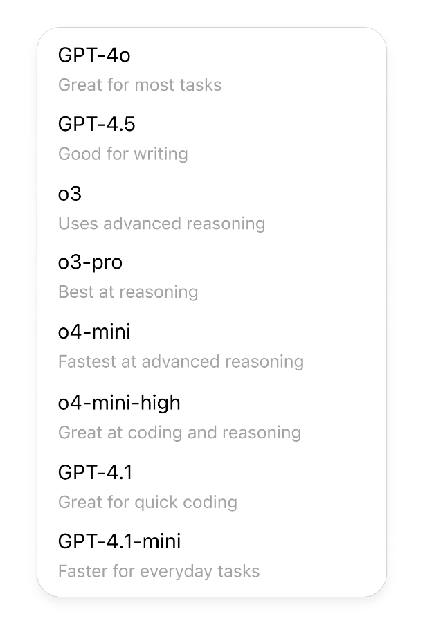</p> <p style="font-size: 16px; color: gray; margin-top: 12px;">Before: pick from 8 models</p> </div> <div style="text-align: center; font-size: 40px; margin-top: 40px;">→</div> <div style="text-align: center;"> <p>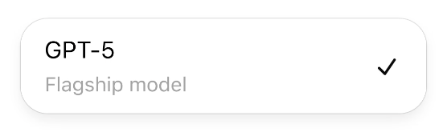</p> <p style="font-size: 16px; color: gray; margin-top: 12px;">After: just "GPT-5"</p> </div> </div> .footnote[Source: ChatGPT model picker, Aug 2025] --- class: center, middle # Why GPT-5 Was a Big Deal: The Benchmarks --- # GPT-5: SOTA on the Artificial Analysis Intelligence Index <div style="text-align: center;"> <img src="../assets/legacy/gpt-5-top-intelligence-index-benchmark.png" width="100%"> </div> .footnote[Source: https://openai.com/index/introducing-gpt-5/] --- # Across the Board: Frontier Results at Launch <div style="display: flex; flex-direction: row; justify-content: center; align-items: center;"> <div style="height: 340px; display: flex; align-items: center; justify-content: center; margin: 0 12px;"> <img src="../assets/legacy/swe-bench-verified-software-engineering-results.png" style="max-height: 100%; max-width: 100%; width: auto; height: auto;"> </div> <div style="height: 340px; display: flex; align-items: center; justify-content: center; margin: 0 12px;"> <img src="../assets/legacy/aime-2025-competition-math-results.png" style="max-height: 100%; max-width: 100%; width: auto; height: auto;"> </div> <div style="height: 340px; display: flex; align-items: center; justify-content: center; margin: 0 12px;"> <img src="../assets/legacy/gpqa-diamond-phd-science-questions-results.png" style="max-height: 100%; max-width: 100%; width: auto; height: auto;"> </div> </div> -- Also SOTA at launch on: FrontierMath (expert math), Aider Polyglot (multilang code editing), Humanity's Last Exam, tau2-bench (function calling), and multimodal visual/video reasoning. .footnote[Source: https://openai.com/index/introducing-gpt-5/] --- # Overall Performance Summary -- **Mathematics**: 94.6% on AIME 2025 (without tools) -- **Coding**: 74.9% on SWE-bench Verified, 88% on Aider Polyglot -- **Multimodal**: 84.2% on MMMU understanding -- **Healthcare**: 46.2% on HealthBench Hard (vs 31.6% for OpenAI o3) -- **Reduced errors, not just raw scores**: 45% fewer factual errors than GPT-4o, 80% fewer with thinking mode vs OpenAI o3 — and matched/beat o3 quality while spending less time thinking per answer .footnote[Source: https://openai.com/index/introducing-gpt-5/] --- class: center, middle # Ok, great the model does well on a lot of benchmarks, but what is new about it? --- class: center, middle # GPT-5 System Card ## Historical Architecture --- # Notes on GPT-5's System Card -- **Real-time Router** - Intelligently decided which model to use - Based on conversation type, complexity, and tools needed -- **Smart and Fast Model (`gpt-5-main`)** - Handled most everyday questions efficiently - Optimized for speed and general capability -- **Deeper Reasoning Model (`gpt-5-thinking`)** - Tackled complex problems requiring deep thought - Produced long internal chains of reasoning, could refine strategy mid-answer --- # Naming It: System Card vs. API vs. What It Replaced <div style="display: flex; justify-content: center; gap: 40px; align-items: flex-start;"> <p>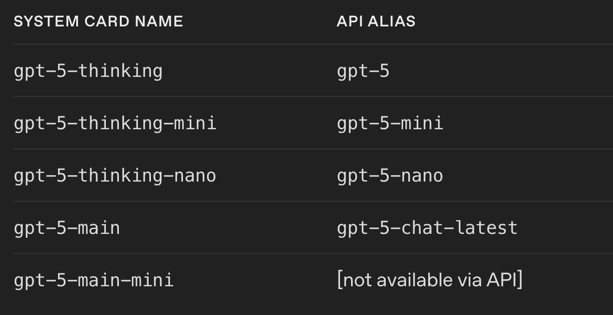</p> <p>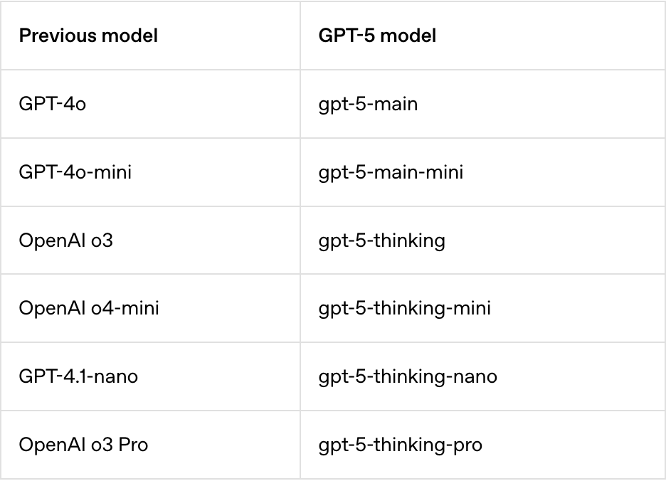</p> </div> .footnote[Source: OpenAI GPT-5 System Card · https://openai.com/index/gpt-5-system-card/] --- # Safety Approach -- ## Traditional Safety Approach - Binary refusal (allow/deny) - Overly cautious, often blocks helpful answers - Lacks nuance for complex or dual-use queries -- ## GPT-5 Safety-Helpfulness ("Safe Completions") - Nuanced, context-aware responses - Balances safety with helpfulness - Enables more informative answers while respecting policy .footnote[Source: https://cdn.openai.com/pdf/be60c07b-6bc2-4f54-bcee-4141e1d6c69a/gpt-5-safe_completions.pdf] --- # Safety vs. Helpfulness, Measured <div style="text-align: center; margin-top: 20px;"> <p>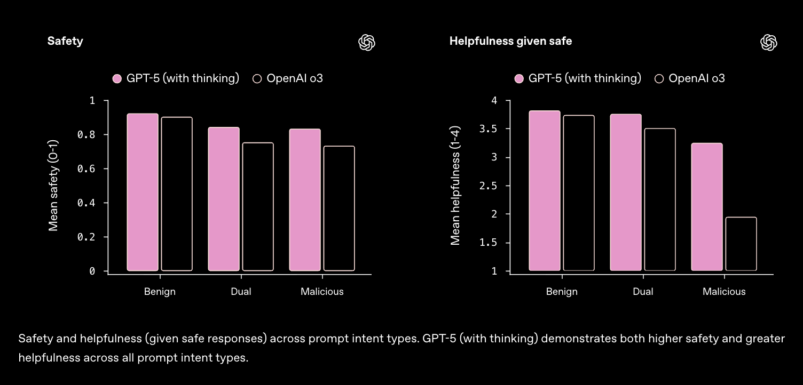</p> </div> .footnote[Source: https://cdn.openai.com/pdf/be60c07b-6bc2-4f54-bcee-4141e1d6c69a/gpt-5-safe_completions.pdf] --- # Key Benefits of Safe-Completions -- - **Maximizes helpfulness** while maintaining safety policy constraints -- - **Particularly effective** for dual-use cases (biology, cybersecurity) -- - **Nuanced responses** instead of blanket refusals -- - **Still the industry standard today** — GPT-5.6 ships on the same safe-completions training approach .footnote[Source: https://cdn.openai.com/pdf/be60c07b-6bc2-4f54-bcee-4141e1d6c69a/gpt-5-safe_completions.pdf] --- class: center, middle # Honest Assessment: GPT-5 at Launch --- # The Rollout Was Rockier Than the Benchmarks Suggest -- - OpenAI had spent over a year hyping GPT-5 as a possible AGI-adjacent leap — Sam Altman compared it to the jump to Retina-display iPhones -- - Press verdict after launch: "incremental improvement rather than the revolutionary leap they were promised" — an expectation gap, not a capability failure -- - OpenAI's own head of ChatGPT later admitted: *"In retrospect, not continuing to offer 4o, at least in the interim, was a miss"* — the sudden retirement of GPT-4o drew real user backlash .footnote[Source: builtin.com/artificial-intelligence/openai-chatgpt-5-hype · interconnects.ai/p/gpt-5-and-bending-the-arc-of-progress] --- # The Router Was the Biggest Complaint <div style="text-align: center;"> <p>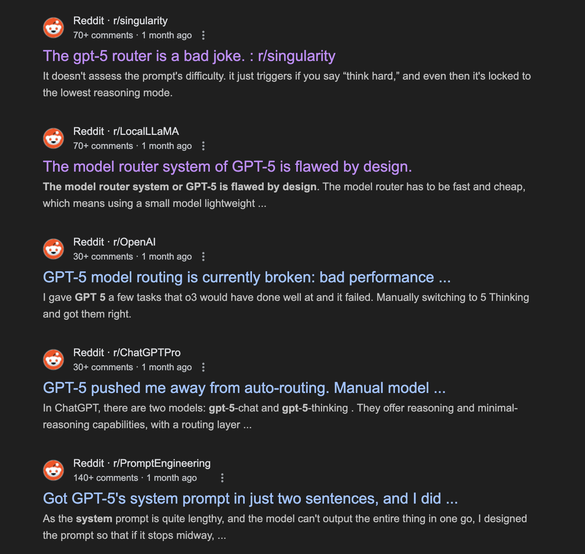</p> </div> .footnote[Source: r/singularity, r/LocalLLaMA, r/OpenAI — Aug/Sep 2025] --- # And Hands-On, the Cracks Showed Too ## Honest Assessment: Intelligence Gaps -- - [**Logic Problem Example**](https://chatgpt.com/share/6895186f-33c0-8004-82b6-d61fdc45d5f3) - Basic reasoning failure -- - [**Melting App Fail**](https://chatgpt.com/share/68953808-7b00-8004-8a0f-557ceb889375) - Physical simulation errors -- > Takeaway: GPT-5 genuinely moved the frontier on benchmarks — but the router, the abrupt GPT-4o retirement, and real reasoning gaps meant the launch experience didn't match the pitch. Keep both things true at once. --- class: center, middle <h1> <span style="background-color: lightgreen"> Demo: My Initial Experiments with GPT-5 </span> </h1> --- # Interactive Learning Applications ## Real GPT-5 Projects (Aug 2025) -- ### **Educational Tools Built**: - [**Transformers Learning App**](https://chatgpt.com/canvas/shared/68950ffbb9f08191b4ed73a86e123119) - Interactive transformer architecture visualization - [**Embeddings Learning App**](https://chatgpt.com/canvas/shared/689512f7e6e4819199e1536602992bf5) - Hands-on embedding exploration - [**Basketball Coach App**](https://chatgpt.com/s/t_68951bd734b08191ae3b9002cd304413) - AI-powered sports coaching - [**iPad Drawing App**](https://chatgpt.com/canvas/shared/68953560217c8191a6360ebde7c1d693) - Touch-optimized creative tool --- # Advanced Web Applications ## Cutting-Edge Implementations -- ### **Interactive Experiences**: - [**Context Rot Paper → Interactive Experience**](https://chatgpt.com/canvas/shared/689527fc5eac8191ae7b0e1170e3bbb1) - Academic paper transformation - [**MediaPipe Music App**](https://chatgpt.com/share/6895403c-87b0-8004-a2b1-8a4fa09eab38) - Hand tracking music interface -- ### **Research Tools**: - [**Prompt Experiments**](https://chatgpt.com/share/68951e12-1d88-8004-8f36-3ef9965c43f8) - Python scripting and analysis - [**Semantic Reader App**](https://claude.ai/public/artifacts/ac58dc2c-1a4b-46db-93fc-3b282e61b045) - Claude comparison project --- class: center, middle # Bridge ## One Year Later: GPT-5 → GPT-5.6 --- # Version History (Aug 2025 → Jul 2026) ## Mostly minor-version iteration — until now? -- - **GPT-5** — Aug 2025 (original launch) -- - **GPT-5.1** — Nov 2025 -- - **GPT-5.2** — Dec 2025 (`reasoning_effort` default → `none`; prompting guide deltas) -- - **GPT-5.4** — Mar 2026 (mini + nano variants) -- - **GPT-5.5** — Apr 2026 (default `reasoning_effort` reverts to `medium`) -- - **GPT-5.5-instant** — May 2026 (ChatGPT default) -- - **GPT-5.6** — Jul 2026 (Sol/Terra/Luna tiers; `reasoning.mode` replaces separate `-pro` model; Programmatic Tool Calling added to Responses API) --- class: center, middle # Act II ## GPT-5.6: Where We Are Today ### July 2026 --- # GPT-5.6 Core Innovations ## Same DNA as GPT-5, evolved knobs -- - **Frontier Intelligence** — "a new class of intelligence for coding and professional work" -- - **Explicit Model Selection** — `gpt-5.6-sol`, `gpt-5.6-terra`, `gpt-5.6-luna` (you choose, instead of a router guessing) -- - **Tunable Reasoning** — `none` → `low` → `medium` → `high` → `xhigh` → `max` -- - **Enhanced Tool Use** — shell, Skills, Connectors -- - **Multimodal** — text, image, audio, video --- # What Actually Changed Since GPT-5? -- **Model selection**: router guessing main/thinking (and a bad reputation for it, see Act I) → you explicitly pick `sol`/`terra`/`luna` -- **Reasoning control**: coarse tiers → 6-level tunable `reasoning.effort`, incl. `pro` mode on Sol (no separate `-pro` model) -- **Conversation state**: manual `previous_response_id` chaining → durable `conversations.create()` object + server-side compaction -- **New in the API**: Programmatic Tool Calling added to the Responses API -- > This is cumulative refinement, not another leap. The honest question for students: is that a problem? --- class: center, middle # Model Comparison & Performance --- # GPT-5.6 Sol — The Current Frontier Model -- OpenAI positions `gpt-5.6-sol` as **"a new class of intelligence for coding and professional work"** — the current frontier model for complex professional tasks, absorbing the dedicated-coding role `gpt-5.3-codex` used to hold. -- - **1,050,000-token** context window; **128,000** max output tokens - Default `reasoning.effort` is `medium`; supports `none`, `low`, `medium`, `high`, `xhigh`, `max` - Hardest problems: same model, `reasoning: {"mode": "pro"}` — no separate `-pro` model anymore .footnote[Source: research/07-gpt-5.6-model-line.md · https://developers.openai.com/api/docs/models/gpt-5.6-sol] --- # GPT-5.6 Model Line (Current Variants) ## Per 1M tokens, standard tier -- | Model | Input | Output | Context | |---|---|---|---| | `gpt-5.6-sol` (alias `gpt-5.6`) | $5.00 | $30.00 | 1,050,000 | | `gpt-5.6-terra` | $2.50 | $15.00 | 1,050,000 | | `gpt-5.6-luna` | $1.00 | $6.00 | 1,050,000 | .footnote[Source: research/07-gpt-5.6-model-line.md · https://developers.openai.com/api/docs/models/gpt-5.6-sol] --- # GPT-5 → GPT-5.6: What Changed in the Price Tag ## Same context-window ballpark, a very different sticker price -- | | GPT-5 | Sol | Terra | Luna | |---|---|---|---|---| | Input /1M | $1.25 | $5.00 | $2.50 | $1.00 | | Output /1M | $10.00 | $30.00 | $15.00 | $6.00 | -- The flagship reasoning tier now costs **roughly 4x more** than GPT-5's single launch price — but a new budget tier (`luna`) undercuts it. Pricing didn't get cheaper across the board; it split into a spectrum. .footnote[GPT-5 = single launch model, Aug 2025 · Sol/Terra/Luna = GPT-5.6 tiers, Jul 2026 · Source: openai.com/index/introducing-gpt-5/ · research/07-gpt-5.6-model-line.md] --- # GPT-5 → GPT-5.6: The Quality Jump, Measured <div style="text-align: center;"> <p>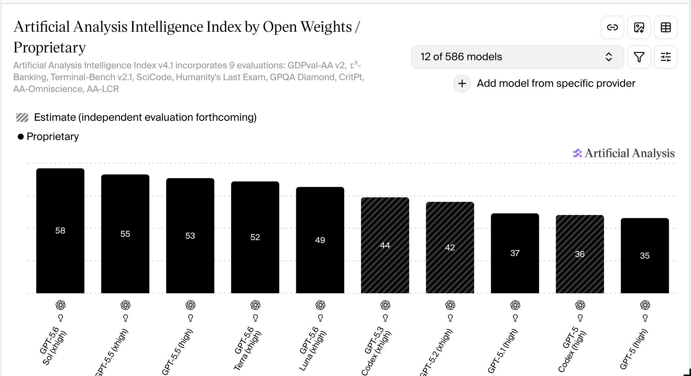</p> </div> -- Same benchmark suite, same scale, one model generation apart: **GPT-5 (high): 35 → GPT-5.6 Sol (xhigh): 58** on the Artificial Analysis Intelligence Index. .footnote[Source: artificialanalysis.ai, Intelligence Index v4.1, checked Jul 2026] --- # ...But at a Real Cost <div style="text-align: center;"> <p>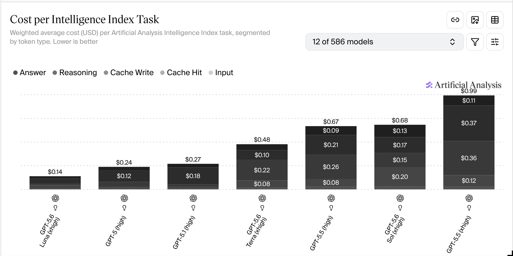</p> </div> -- **GPT-5 (high): $0.24 → GPT-5.6 Sol (xhigh): $0.68** per Intelligence Index task — roughly 3x. The budget tier tells a different story: **Luna (xhigh) is $0.14**, cheaper than GPT-5 despite being the newer model. .footnote[Source: artificialanalysis.ai, Cost per Intelligence Index Task, checked Jul 2026] --- <div style="justify-content: center; align-items: center; height: 70vh;"> <p>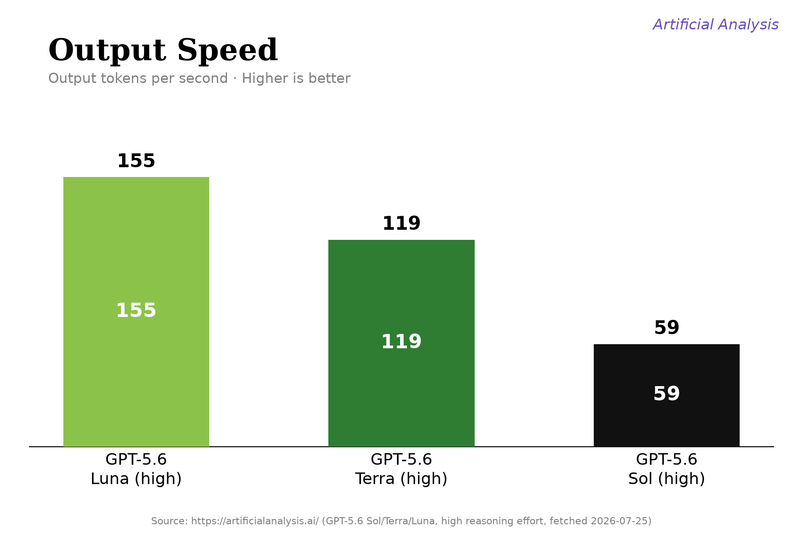</p> <p style="font-size: 14px; color: gray;">GPT-5.6 Luna: 155 tok/s · Terra: 119 tok/s · Sol: 59 tok/s (high reasoning) — the classic speed/quality trade-off, now split across three named tiers instead of one router guess</p> </div> .footnote[Source: https://artificialanalysis.ai/ (GPT-5.6 Sol/Terra/Luna, high reasoning effort), fetched 2026-07-25] --- <div style="justify-content: center; align-items: center; height: 70vh;"> <p>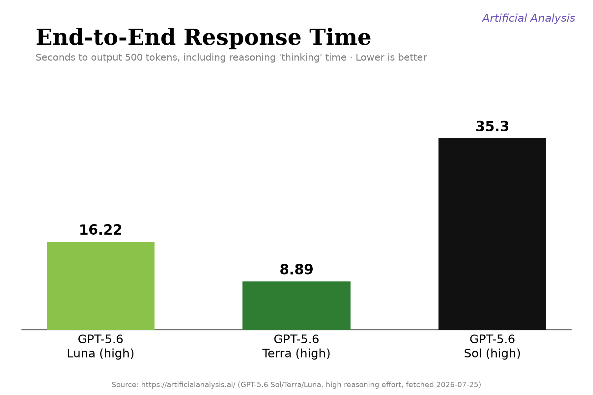</p> <p style="font-size: 14px; color: gray;">GPT-5.6 Terra: 8.89s · GPT-5.6 Sol: 35.3s end-to-end (incl. thinking time, 500 tokens)</p> </div> .footnote[Source: https://artificialanalysis.ai/, fetched 2026-07-25] --- class: center, middle # Honest Assessment: GPT-5.6 Today --- # Fixed Since GPT-5 -- - **Router distrust** — gone, because there's no router. You pick the model explicitly. -- - **Coarse reasoning control** — 6 tunable levels instead of a hidden switch -- - **Abrupt deprecations** — GPT-5.6's own deprecation notices (Agent Builder, Evals, `v1/prompts`) shipped with a 6-month notice window, unlike the GPT-4o retirement backlash -- - **Safety approach** — safe-completions matured, same framework, no regression --- # Still True (or New) Today -- - **Simon Willison**, on the three-tier lineup: *"One of the most confusing aspects of GPT-5.6 is figuring out which model to use at which reasoning effort."* -- - **Sol's weakness: fuzzy judgment** — for open-ended architecture or product-tradeoff questions with several defensible answers, still worth running multiple models in parallel -- - **Luna's weakness: shallow reasoning** — weaker on long-context retention and nuance; don't reach for it on complex multi-step analysis -- - **Terra is the sweet spot for most work** — roughly GPT-5.5-class quality at about half the price .footnote[Source: simonw.substack.com/p/the-new-gpt-56-family-luna-terra · coderabbit.ai/blog/gpt-5-6-sol-and-terra-benchmark · vellum.ai/blog/gpt-5-6-benchmarks-explained] --- class: center, middle <h1> <span style="background-color: lightgreen"> Demo: Getting Started with GPT-5.6 </span> </h1> --- class: center, middle # Building with GPT-5.6: API & Integration --- <div style="text-align: center;margin-top: 70px;"> <p>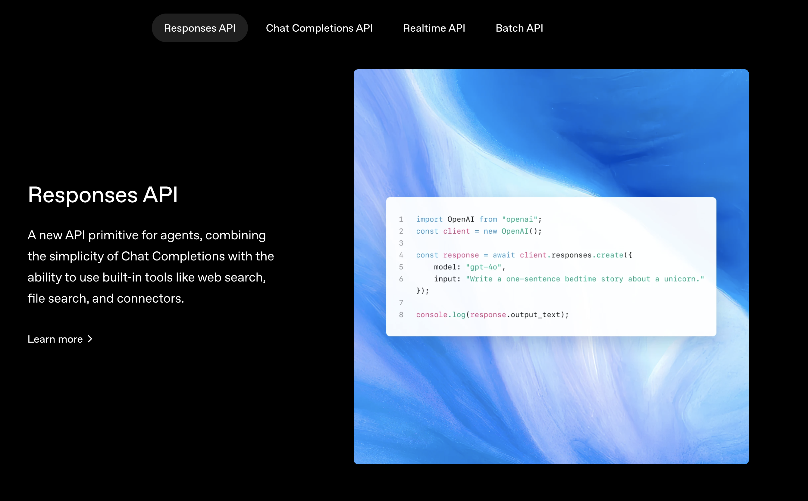</p> <p style="font-size: 14px; color: gray;"> <a href="https://openai.com/api/" target="_blank" style="color: gray; text-decoration: underline;">Responses API</a> </p> </div> --- # Conversations API **Before (legacy):** manual `previous_response_id` chaining ```python r1 = client.responses.create(model="gpt-5.6-sol", input="tell me a joke") r2 = client.responses.create( model="gpt-5.6-sol", previous_response_id=r1.id, input="explain why this is funny", ) ``` **After:** a durable conversation object ```python convo = client.conversations.create() client.responses.create( model="gpt-5.6-sol", conversation=convo.id, store=True, input="tell me a joke", ) ``` .footnote[Source: https://developers.openai.com/api/docs/guides/conversation-state] --- # Conversations API — What Else It Gives You -- - **Server-side compaction** — `/responses/compact` shrinks context automatically each turn -- - **`phase` parameter** — `commentary` (thinking out loud) vs `final_answer` (the deliverable) .footnote[Source: https://developers.openai.com/api/docs/changelog] --- <div style="text-align: center;margin-top: 20px;"> <p>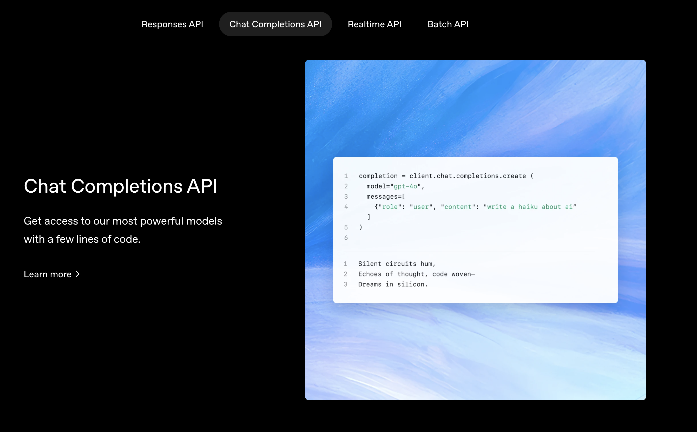</p> <p style="font-size: 14px; color: gray;"> <a href="https://openai.com/api/" target="_blank" style="color: gray; text-decoration: underline;">Chat Completions API</a> — legacy, still supported for GPT-5.6<br> <strong>Current recommendation:</strong> build new work on the Responses API (previous slide) — keep Chat Completions only for existing integrations </p> </div> .footnote[Source: https://developers.openai.com/api/docs/deprecations, checked Jul 2026] --- <div style="text-align: center;margin-top: 70px;"> <p>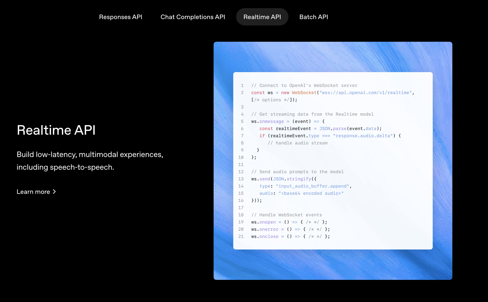</p> <p style="font-size: 14px; color: gray;"> <a href="https://openai.com/api/" target="_blank" style="color: gray; text-decoration: underline;">Realtime API</a> </p> </div> --- <div style="text-align: center;margin-top: 70px;"> <p>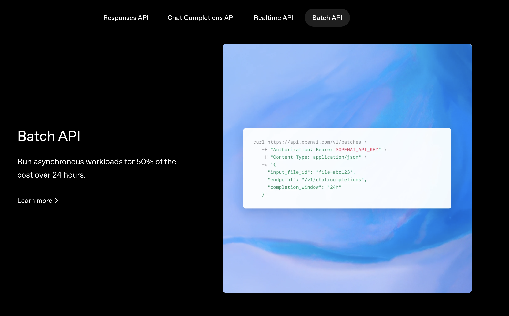</p> <p style="font-size: 14px; color: gray;"> <a href="https://openai.com/api/" target="_blank" style="color: gray; text-decoration: underline;">Batch API</a> </p> </div> --- class: inverse, center, middle # Agents SDK --- # The 7 Agents SDK Primitives -- - **Agent** — the LLM config: instructions + tools; plans, calls tools, keeps state -- - **Runner** — executes the agent loop; manages streaming, state, result handling -- - **Tools** — function tools (`@function_tool`), hosted tools, and MCP servers -- - **Handoffs** — delegate to specialist agents; you control which agent replies -- - **Guardrails** — input/output validation; pause/block risky ops, add human review -- - **Sessions** — automatic conversation-history management, resumable across turns -- - **Tracing** — built-in run tracking to view, debug, and optimize workflows .footnote[Source: [openai-agents-python](https://github.com/openai/openai-agents-python) · [Agents guide](https://developers.openai.com/api/docs/guides/agents)] --- # Agents SDK — Minimal Example ## Define an Agent, run it with streaming ```python from agents import Agent, Runner agent = Agent( name="Assistant", model="gpt-5.6-sol", instructions="Help users with their tasks", ) result = Runner.run_streamed(agent, "Summarize today's standup notes") async for event in result.stream_events(): print(event) ``` .footnote[Source: [openai-agents-python](https://github.com/openai/openai-agents-python)] --- # Agents SDK — Handoffs ## Triage agent delegates to a specialist ```python from agents import Agent, Runner refunds = Agent( name="Refunds Specialist", model="gpt-5.6-sol", instructions="Handle refund requests end to end.", ) triage = Agent( name="Triage", model="gpt-5.6-terra", instructions="Route the user. Hand off refund issues to the specialist.", handoffs=[refunds], # explicit delegation ) result = Runner.run_sync(triage, "I want a refund for order #4821") print(result.final_output) ``` .footnote[Source: [openai-agents-python](https://github.com/openai/openai-agents-python) · [Agents guide](https://developers.openai.com/api/docs/guides/agents)] --- class: center, middle # Q&A & Break --- class: center, middle # GPT-5.6 Prompting Guide Complete Breakdown --- <div style="text-align: center;"> <p>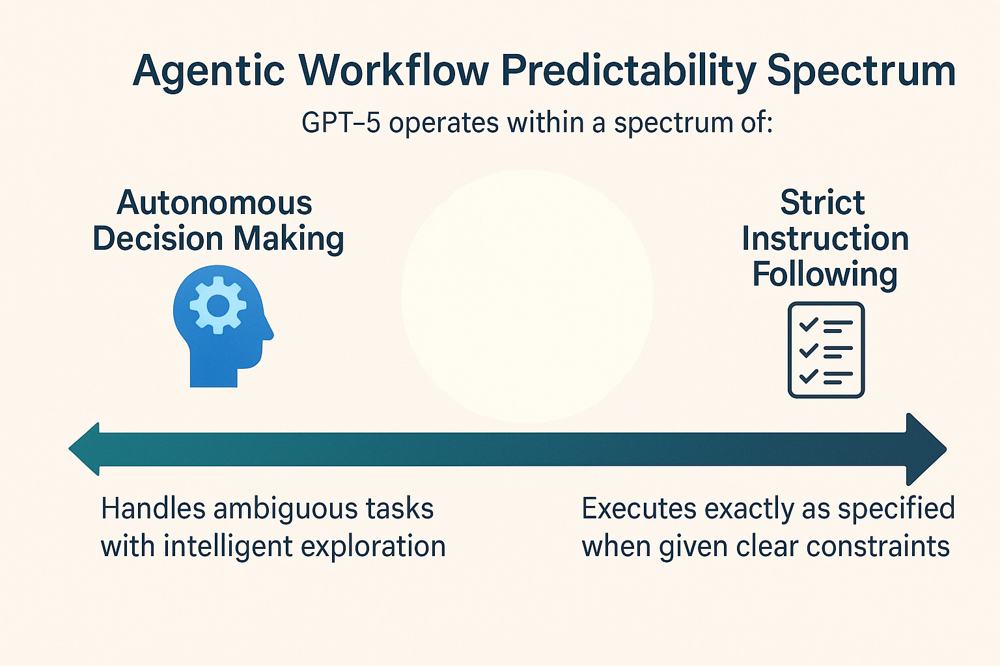</p> </div> -- > Prompting guidance changes almost every model generation. The next few slides lead with **current GPT-5.6 practice** — older patterns are noted only as a small "previously" aside, so you can spot and unlearn outdated mental models instead of carrying them forward. .footnote[Source: [GPT-5 Prompting Guide](https://cookbook.openai.com/examples/gpt-5/gpt-5_prompting_guide)] --- # Current Practice: Verbosity Is a Global Parameter -- **GPT-5.6 today:** control output length with the API-level `text.verbosity` parameter (`low`/`medium`/`high`) — a single global switch, not something you write into the prompt. ```python response = client.responses.create( model="gpt-5.6-sol", text={"verbosity": "low"}, input="Summarize this incident report.", ) ``` -- **Why:** set once, applies consistently — it doesn't compete with your actual task instructions for the model's attention inside the prompt. -- .previously[ > *Previously:* this needed an in-prompt `<output_verbosity_spec>` block spelling out sentence/bullet counts. If that's the mental model you learned, drop it — the guide moved this back to the API layer. ] .footnote[Source: [OpenAI GPT-5.6 prompting guide](https://developers.openai.com/api/docs/guides/prompt-guidance-gpt-5p6) · [GPT-5.2 guide](https://developers.openai.com/cookbook/examples/gpt-5/gpt-5-2_prompting_guide) (historical)] --- # Current Practice: State the Constraint, Skip the Ceremony -- **GPT-5.6 today:** one plain sentence carries the same weight a whole fenced block used to need — the model follows prompt contracts closely, so ceremony doesn't add safety margin anymore. ```text Implement only what's requested — no extra features, components, or UX embellishments. ``` -- **Why it's enough now:** GPT-5.6 treats this as a real constraint to satisfy, not a suggestion to weigh against other instructions. -- .previously[ > *Previously:* the same guidance needed a dedicated `<scope_discipline>` XML block to fight over-coding. The constraint was always correct — only the packaging is obsolete. ] .footnote[Source: [OpenAI GPT-5.6 prompting guide](https://developers.openai.com/api/docs/guides/prompt-guidance-gpt-5p6) · [GPT-5.2 guide](https://developers.openai.com/cookbook/examples/gpt-5/gpt-5-2_prompting_guide) (historical)] --- # Current Practice: Trust the Default Grounding -- **GPT-5.6 today:** re-grounding on long inputs and flagging unstated assumptions or ungrounded claims are things the model now does reliably on its own — you generally don't need to instruct it to outline, re-state constraints, or self-check before answering. -- **Reserve explicit instructions for genuinely unusual cases:** adversarial or contradictory source material, or domains where a wrong answer is costly enough that you want the check made visible in the output. -- .previously[ > *Previously:* this needed explicit step-by-step re-grounding and uncertainty-self-check instructions written into every long-context or high-risk prompt. GPT-5.6 does this by default — verify occasionally, don't over-prompt for it. ] .footnote[Source: [OpenAI GPT-5.6 prompting guide](https://developers.openai.com/api/docs/guides/prompt-guidance-gpt-5p6) · [GPT-5.2 guide](https://developers.openai.com/cookbook/examples/gpt-5/gpt-5-2_prompting_guide) (historical)] --- # Controlling Agentic Eagerness — Less -- **GPT-5.6 today:** `reasoning.effort` is still the real lever — set it low for fast, narrow, low-latency tasks. ```python response = client.responses.create( model="gpt-5.6-sol", reasoning={"effort": "none"}, input="Find the definition of `parse_config` in src/.", ) ``` -- **Stopping conditions still matter — say them once, plainly:** ```text Search only in src/. Stop once you find the function or after 2 searches. ``` -- **Benefits:** faster responses, more predictable behavior, lower token usage. -- .previously[ > *Previously:* this same goal needed a full `<context_gathering>` XML template. GPT-5.6's guide names templates like that as trim-worthy — the plain sentence above does the same job. ] .footnote[Source: [OpenAI GPT-5.6 prompting guide](https://developers.openai.com/api/docs/guides/prompt-guidance-gpt-5p6) · [GPT-5 guide](https://cookbook.openai.com/examples/gpt-5/gpt-5_prompting_guide) (historical)] --- # Controlling Agentic Eagerness — More -- **GPT-5.6 today:** raise `reasoning.effort` for tasks that need real persistence through to completion. ```python reasoning={"effort": "high"} # default is "medium" ``` -- **The model persists on its own now** — it keeps working through a task and verifies edge cases without being told to, so a reminder block isn't doing any work anymore. -- **Tool-calling updates:** a brief one-liner when starting a new phase or changing plan is enough — not a running narration of every step. -- .previously[ > *Previously:* this needed an explicit `<persistence>` block plus instructions for thorough step-by-step progress narration. GPT-5.6's guide flags both as things to trim; keep `reasoning.effort` as the real lever. ] .footnote[Source: [OpenAI GPT-5.6 prompting guide](https://developers.openai.com/api/docs/guides/prompt-guidance-gpt-5p6) · [GPT-5 guide](https://cookbook.openai.com/examples/gpt-5/gpt-5_prompting_guide) (historical)] --- # Performance Optimization Techniques ## Context Reuse & Efficiency -- ### **Leverage Previous Reasoning Traces** - Reuse context across turns instead of rebuilding history by hand - **Current best practice:** durable conversation objects (`conversations.create()` + `store=True`) over manual `previous_response_id` chaining .footnote[Source: [OpenAI Responses API — Conversation State](https://developers.openai.com/api/docs/guides/conversation-state)] --- class: center, middle <h1> <span style="background-color: lightgreen"> Demo: Context Reuse & Efficiency </span> </h1> Run the Responses API context-reuse and conversation-state examples hands-on. `notebooks/00-introduction-openai-responses-api.ipynb` --- # The Hidden Cost of Bad Prompts - GPT-5's stricter instruction following amplifies poor prompts -- - Contradictory instructions lead to inefficient Reasoning -- - Always resolve instruction hierarchy conflicts -- ### **Example: Resolving Conflicts** ``` ❌ "Be concise but provide detailed explanations" ✅ "Provide a 2-sentence summary, then detailed bullet points" ``` .footnote[Source: [GPT-5 Prompting Guide - Instruction Hierarchy](https://cookbook.openai.com/examples/gpt-5/gpt-5_prompting_guide#instruction-hierarchy)] --- # GPT-5.6 Coding Excellence ## Optimal Framework Stack -- <div style="display: grid; grid-template-columns: 1fr 1fr; gap: 2rem;"> <div> <strong>Frontend Frameworks:</strong> <ul> <li>Next.js (TypeScript)</li> <li>React</li> <li>HTML</li> </ul> <strong>Styling/UI:</strong> <ul> <li>Tailwind CSS</li> <li>shadcn/ui</li> <li>Radix Themes</li> </ul> </div> <div> <strong>Icons & Animation:</strong> <ul> <li>Material Symbols</li> <li>Heroicons, Lucide</li> <li>Motion library</li> </ul> <strong>Typography:</strong> <ul> <li>Sans Serif, Inter</li> <li>Geist, Mona Sans</li> <li>IBM Plex Sans, Manrope</li> </ul> </div> </div> --- # Current Practice: Ask for the Outcome, Not the Self-Review -- **GPT-5.6 today:** state the quality bar once, as an outcome — the model already applies this kind of review internally without being asked to narrate a score. ```text Make sure components are reusable, errors are handled, and the implementation is reasonably performant before finishing. ``` -- .previously[ > *Previously:* this needed a `<self-reflection>` block asking the model to score itself 1–10 on each dimension and explain improvements. That scored checklist is exactly the kind of process narration GPT-5.6's guide says to trim. ] .footnote[Source: [OpenAI GPT-5.6 prompting guide](https://developers.openai.com/api/docs/guides/prompt-guidance-gpt-5p6) · [GPT-5 guide — Codebase Design](https://cookbook.openai.com/examples/gpt-5/gpt-5_prompting_guide#matching-codebase-design) (historical)] --- # Current Practice: Concrete Constraints, Not Absolute Words -- **GPT-5.6 today:** keep the specific, measurable rules — drop the "always"/"never" framing around them. ```text Typography: 4-5 sizes max. Spacing: multiples of 4. Color: 1 neutral base + up to 2 accents. Loading state: skeleton placeholders. Prefer Radix/shadcn for built-in accessibility. ``` -- **Why:** GPT-5.6 follows prompt contracts closely enough that hard numbers and named defaults do real work on their own — wrapping them in "Always..."/"Never..." adds friction without adding compliance. -- .previously[ > *Previously:* the same rules were framed inside a `<ui_ux_best_practices>` block full of "Always" directives. The constraints were correct then and still are — only the absolute-word packaging is what GPT-5.6's guide flags as historical. ] .footnote[Source: [OpenAI GPT-5.6 prompting guide](https://developers.openai.com/api/docs/guides/prompt-guidance-gpt-5p6) · [GPT-5 guide — Codebase Design](https://cookbook.openai.com/examples/gpt-5/gpt-5_prompting_guide#matching-codebase-design) (historical)] --- # Ecosystem Support - **GitHub Copilot**: - Available across all paid plans - VS Code, GitHub.com, GitHub Mobile - Enhanced multi-file changes/refactors -- - **Cursor Feedback**: - "Smartest coding model we've used" - Optimized for interactive development -- - **Third-Party Tools**: - Windsurf integration Codex CLI optimization - Fine-tuned for agentic coding -- - **`gpt-5.6-sol`**: - Absorbed the dedicated-coding-model role `gpt-5.3-codex` used to hold - Real-world task training - Complex independent task handling --- # Recommended Prompting Patterns -- **1. Brief Thought Process Summary** ```markdown "Start your response with 2-3 bullet points summarizing your reasoning approach before the full answer" ``` -- **2. Tool-Calling Preambles** *(historical — GPT-5.6's guide says trim this to a brief one-liner, not a running narration)* ```markdown "Before each tool use, explain: what you're doing, why, and what you expect to find" ``` -- **3. Disambiguated Tool Instructions** ```markdown "Search for 'class UserAuth' in authentication files only, stop after finding the implementation, not just imports" ``` -- **4. Planned Execution at Minimal Reasoning** ```markdown "First, outline your approach in 3 steps. Then execute each step completely before moving on." ``` --- # Markdown Formatting & Output Control ## Professional Output Formatting -- ### **Semantic Markdown Usage:** ```markdown Use Markdown **only where semantically correct**: - `inline code` for functions, variables - ```code fences``` for code blocks - Lists and tables for structured data - \( and \) for inline math - \[ and \] for block math ``` .footnote[Source: [GPT-5 Prompting Guide - Markdown](https://cookbook.openai.com/examples/gpt-5/gpt-5_prompting_guide#markdown-formatting)] --- class: center, middle # GPT-5.6 Prompting Guide: The Philosophy Flips --- # Current Best Practice: Trim, Don't Scaffold -- GPT-5.6's prompting guide reverses earlier advice: outcome-first, not scaffolding-first. -- **Trim:** - XML persistence blocks, repeated style rules that don't change behavior - Context-gathering templates, self-graded checklists, process narration - Absolute directives ("always" / "never") -- **Keep:** - Outcome statements, success criteria, stopping conditions - Hard, concrete constraints (specific numbers, specific formats) .footnote[Source: [OpenAI GPT-5.6 prompting guide](https://developers.openai.com/api/docs/guides/prompt-guidance-gpt-5p6), Jul 2026] --- # Why the Shift: Measured Impact -- **Measured impact of trimming:** +10–15% eval scores, −41–66% tokens, −33–67% cost -- **New tools instead of prompt scaffolding:** a global `text.verbosity` parameter, and Programmatic Tool Calling (offload filtering/batching to code, not model judgment) -- > **Why the reversal happened:** GPT-5.6 "follows prompt contracts closely" — conflicting or redundant rules now cause instability (the model burns reasoning tokens reconciling contradictions) rather than adding safety margin the way they did on less-steerable 2025-era models. .footnote[Source: [OpenAI GPT-5.6 prompting guide](https://developers.openai.com/api/docs/guides/prompt-guidance-gpt-5p6), Jul 2026] --- class: center, middle <h1> <span style="background-color: lightgreen"> Demo: Prompting Guide for GPT-5.6 - Hands-on </span> </h1> --- class: center, middle <h1> <span style="background-color: lightgreen"> Demo: Prompt Optimizer Tool </span> </h1> .footnote[Source: [Prompt Optimizer Tool](https://platform.openai.com/chat/edit?models=gpt-5&optimize=true)] --- class: center, middle # Q&A & Break --- class: center, middle <h1> <span style="background-color: lightgreen"> Demo: Building GPT-5.6 Powered Apps </span> </h1> --- class: center, middle # Q&A & Break --- # Key Takeaways ## Closing the Two-Act Arc -- - **GPT-5 proved the leap**: a unified model, frontier benchmarks across math/coding/multimodal, and safe-completions as the new safety standard — with real rollout scars (router backlash, abrupt GPT-4o retirement) -- - **GPT-5.6 refined it**: the router became explicit model selection (`sol`/`terra`/`luna`), reasoning went from a hidden switch to 6 tunable levels, and durable Conversations replaced manual chaining — cumulative, not revolutionary -- - **What's still hard**: picking the right tier/effort combo, Sol's fuzzy judgment on open-ended tradeoffs, Luna's shallow reasoning on complex tasks -- - **Comprehensive API ecosystem** with built-in tools, Agents SDK, and MCP integration ties both eras together --- # What NOT to Use (Deprecated as of June 2026) -- - **Agent Builder** (visual workflow tool) — sunset **Nov 30, 2026** - Migrate to the **Agents SDK** or ChatGPT Workspace Agents -- - **Evals platform** — **read-only Oct 31, 2026**, full shutdown **Nov 30, 2026** - Move to the SDK's tracing → eval loop, or code-based evals -- - **Reusable prompt objects** (`v1/prompts`) — shutdown **Nov 30, 2026** - Move prompt content into application code -- > These were announced deprecated **Jun 3, 2026** — don't build new workflows on them. .footnote[Source: https://developers.openai.com/api/docs/deprecations] --- # Next Steps & Resources ## Continue Your GPT-5.6 Journey ### **Official Documentation** - [GPT-5.6 System Card](https://deploymentsafety.openai.com/gpt-5-6) (Jul 9, 2026) - [GPT-5.6 Model Guidance & Prompting Guide](https://developers.openai.com/api/docs/guides/prompt-guidance-gpt-5p6) - [OpenAI API Documentation](https://platform.openai.com/docs/overview) ### **Hands-on Practice** - [Prompt Optimizer (Playground)](https://platform.openai.com/chat/edit?optimize=true) - [Programmatic Tool Calling Guide](https://developers.openai.com/api/docs/guides/tools-programmatic-tool-calling) - [GPT-5.6 Sol Model Reference](https://developers.openai.com/api/docs/models/gpt-5.6-sol) --- # Connect With Me ## 📚 [Course materials](https://github.com/EnkrateiaLucca/gpt5-course.git) ## 🔗 [LinkedIn](https://www.linkedin.com/in/lucas-soares-969044167/) ## 🐦 [Twitter/X - @LucasEnkrateia](https://x.com/LucasEnkrateia) ## 📺 [YouTube - @automatalearninglab](https://www.youtube.com/@automatalearninglab) ## 📧 Email: lucasenkrateia@gmail.com ---